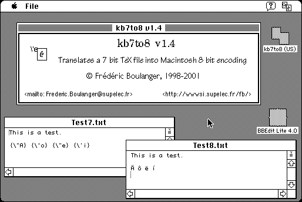

Download
7-8bit-US-1.4.zip (12K) kb8to7 and kb7to8 1.4 repackaged into a zipped hfs disk image and checksum file. The disk image can be mounted with Mini vMac.
7-8bit-US-1.4.sea.bin (12K) kb8to7 and kb7to8 1.4 in the original format.
copyright: Frédéric Boulanger
mod date: Jan 11, 2001
license: Freeware
official url :
Index of /boulanger/download/Mac
“Two utilities that translate TeX or LaTeX files: kb7to8 translates from 7 bit standard (\'e) to 8 bit Macintosh (é). kb8to7 reverses the operation.” Requires System 7. Based on DropShell by Leonard Rosenthol, Marshall Clow and Stephan Somogyi. Source code is available (below).

Download Source
7-8bit-src-1.4.zip (418K) kb8to7 and kb7to8 1.4 source repackaged into a zipped hfs disk image and checksum file. The disk image can be mounted with Mini vMac.
7-8bit-src-1.4.sea.bin (684K) kb8to7 and kb7to8 1.4 source in the original format.
If you find these downloads useful, please consider helping the Gryphel Project, which hosts them.
Here are the md5 checksums for the downloads, signed with Gryphel Key 5:
--------- GRY SIGNED TEXT --------- 57ce12965c99b33e4bbf16d77defb5ae 7-8bit-US-1.4.zip 48e0a6ec4b45f03252cc16b2aae79cb0 7-8bit-US-1.4.sea.bin 0b68f82128dd3c038a0d0fa9bc415bbd 7-8bit-src-1.4.zip 83f802e1e23efbe5adbad24509282d84 7-8bit-src-1.4.sea.bin ------- BEGIN GRY SIGNATURE ------- Gry/4Xa8CFcUzxdN/MLuxOjGjLTa9XXAIFvJaDc3BzuHYu6K9CU9z89QgYOJtTdi YIOOqKlMoUImYZDaX2ztJ/4It8B9mk7UC5VMTmoTj202IenfEMIZqCgrAUaBXYNL HttSoBLp12VcCTy6Xvheg/GASjHBc9CCPSkVyjNG3ArLW4nyh9ijON3Ph/OhRyQM -------- END GRY SIGNATURE --------